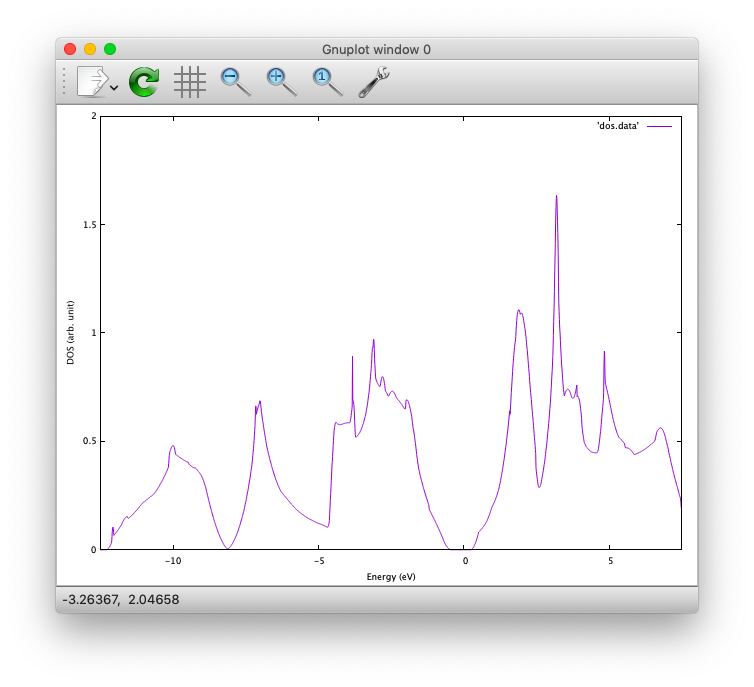
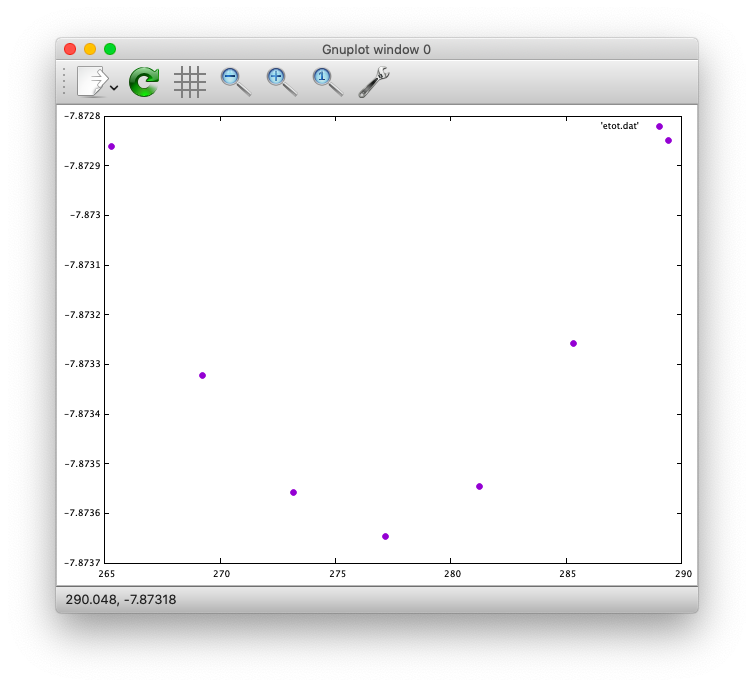
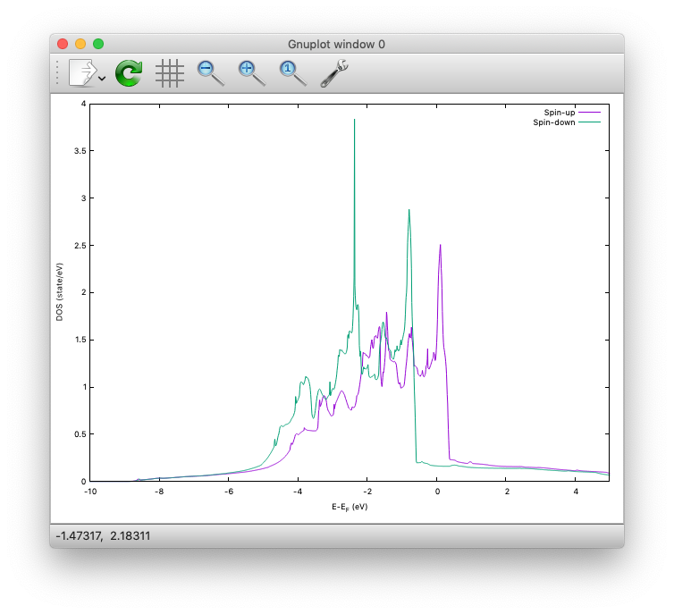
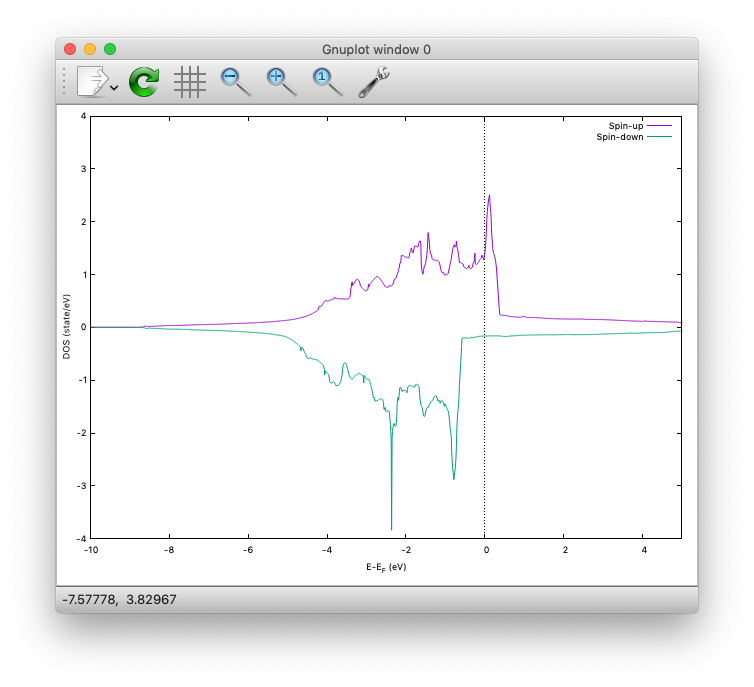
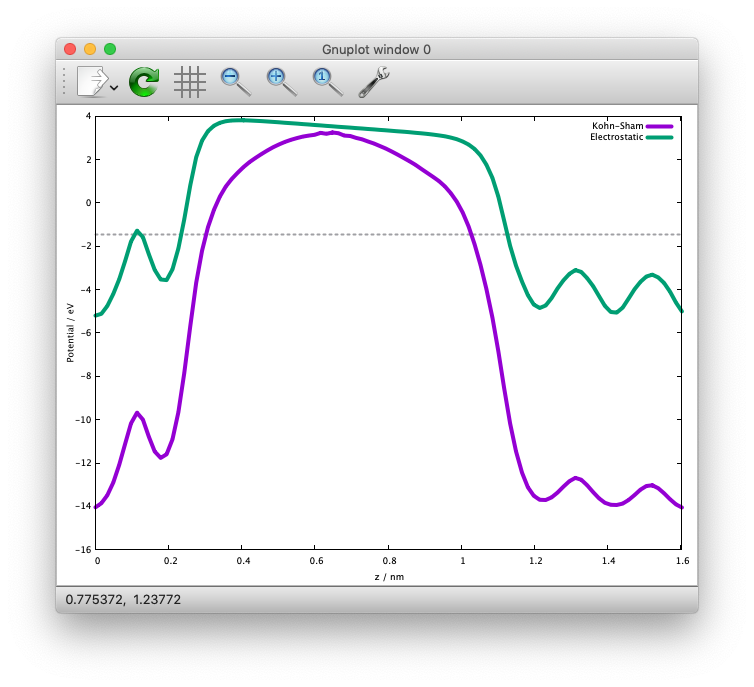
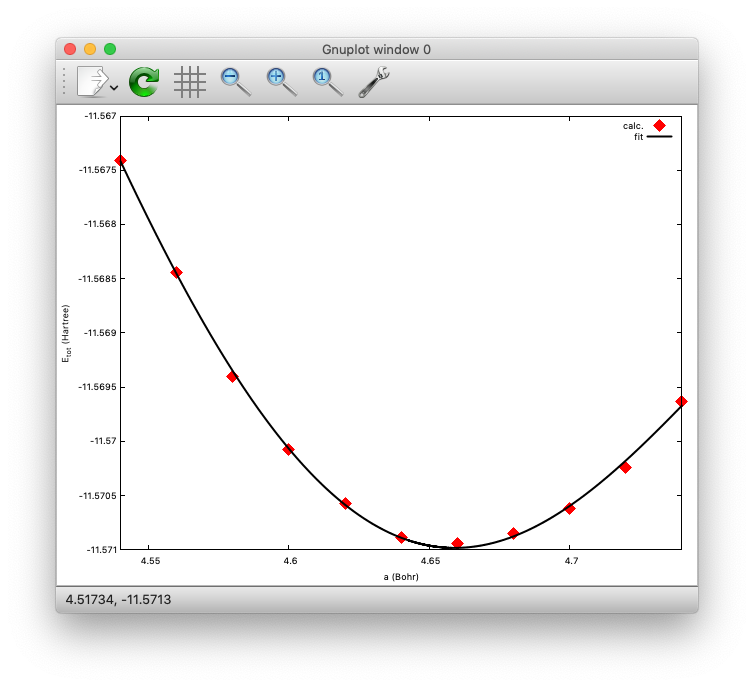
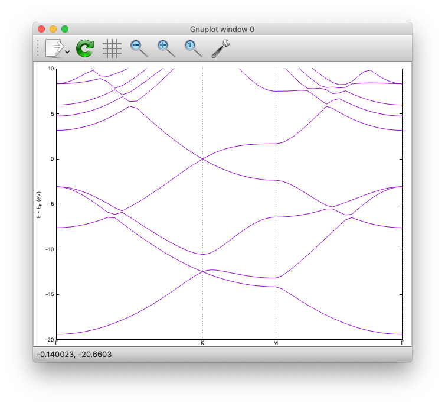
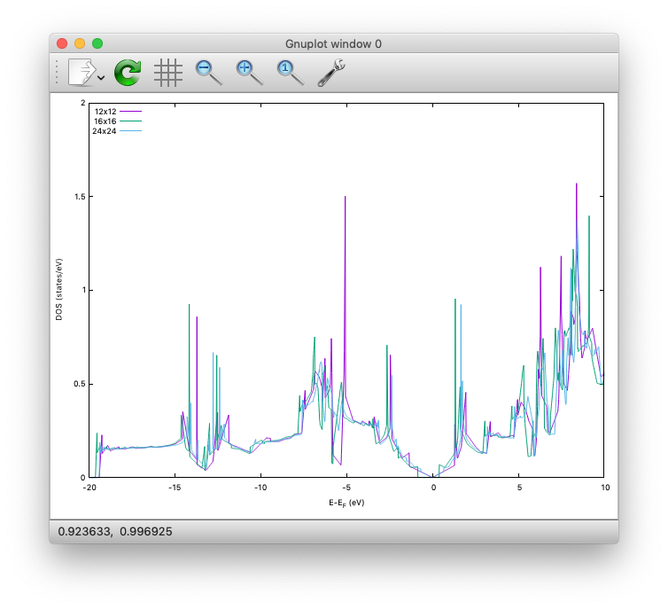
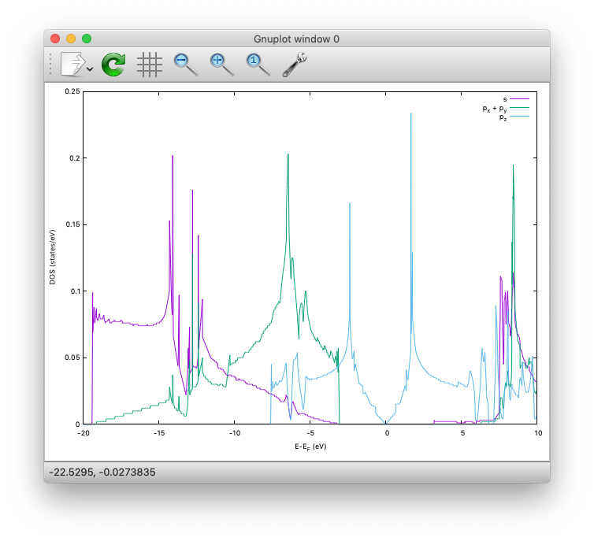
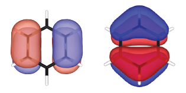

Beginner course @ CMD40¶
Welcome to the STATE hands-on tutorial at CMD40. In the following, how to run the STATE examples for this hands on is desdribed.
Getting started¶
First of all, we login the cluster system.
$ ssh -Y [user_name]@pyxis.mp.es.osaka-u.ac.jp
where [user_name] is your user name assigned.
Then, we are going to set up the STATE program, pseudopotentials, and example files.
This is done by executing the following command in the home directory (${HOME} or ~) as:
$ git clone https://github.com/ikuhamada/state-setup.git STATE
See also my github page.
Then, go to the STATE directory
$ cd STATE
and execute the following
$ ./state-setup.sh
and you are all set!
The source file is located in ${HOME}/STATE/src and examples ${HOME}/STATE/examples.
Go to the STATE directory by typing
$ cd ~/STATE
and
$ ls
you can find the directories as:
examples/ gncpp/ src/
Let us move to ${HOME}/STATE/examples.
As the first example, let us use the carbon monoxide (CO) molecule in a box.
Go to CO in the examples directory, and have a look at by cat nfinp_scf
WF_OPT DAV
NTYP 2
NATM 2
GMAX 5.50
GMAXP 20.00
NSCF 200
WAYMIX 3
KBXMIX 8
MIX_ALPHA 0.8
WIDTH 0.0010
EDELTA 0.1000D-09
NEG 8
CELL 6.00 4.00 4.00 90.00 90.00 90.00
&ATOMIC_SPECIES
C 12.011 pot.C_pbe1
O 15.999 pot.O_pbe1
&END
&ATOMIC_COORDINATES
0.0000 0.0000 0.0000 1 1 1
2.2000 0.0000 0.0000 1 1 2
&END
Short description of the input variables can be found here
Let us review the job script by cat qsub_cmd.sh
#$ -S /bin/sh
#$ -cwd
#$ -q all.q
#$ -pe smp 4
#$ -N CO
# Disable OPENMP parallelism
setenv OMP_NUM_THREADS 1
# Set the execuable of the STATE code
ln -fs ${HOME}/STATE/src/state/src/STATE .
# Set the pseudopotential data
ln -fs ../gncpp/pot.C_pbe1
ln -fs ../gncpp/pot.O_pbe1
# Set the input/output file
INPUT_FILE=nfinp_scf
OUTPUT_FILE=nfout_scf
# Run!
mpirun -np $NSLOTS ./STATE < ${INPUT_FILE} > ${OUTPUT_FILE}
and submit!
$ qsub qsub_cmd.sh
The output nfout_scf starts with the header
***********************************************************************
* *
* *
* *
* ****** ******** ** ******** ******** *
* ******** ******** **** ******** ******** *
* ** ** ** ** ** ** *
* *** ** ******** ** ****** *
* *** ** ********** ** ****** *
* ** ** ** ** ** ** *
* ******** ** ** ** ** ******** *
* ****** ** VERSION 5.6.9 ** ******** *
* RICS-AIST *
* OSAKA UNIVERSITY *
* *
***********************************************************************
and at the convergence, total energy, its components, and Fermi energy are printed as
TOTAL ENERGY AND ITS COMPONENTS
TOTAL ENERGY = -22.21942426 A.U.
KINETIC ENERGY = 9.92111407 A.U.
HARTREE ENERGY = 5.12121800 A.U.
XC ENERGY = -5.89585641 A.U.
LOCAL ENERGY = -20.23161604 A.U.
NONLOCAL ENERGY = 6.73686140 A.U.
EWALD ENERGY = -17.87114528 A.U.
PC ENERGY = 0.00000000 A.U.
ENTROPIC ENERGY = 0.00000000 A.U.
FERMI ENERGY = 0.43248213
along with the forces acting on atoms
ATOM COORDINATES FORCES
MD: 1
MD: 1 C 0.000000 0.000000 0.000000 0.01852 -0.00000 -0.00000
MD: 2 O 2.200000 0.000000 0.000000 -0.01858 0.00000 -0.00000
Congratulations! We see the victory cat at the end of the output file:-)
HHHHHHHHHHHHHHHHHHHHHHHHHHHHHHHHHHHHHHHHHHHHHHHHHHHHHHHHHHHHHHHHH
HHHHHHHHHHHHHHHHHHHHHHHHHHHHHHHHHHHHHHHHHHHHHHHHHHHHHHHHHHHHHHHHH
_______________________
__________ _______/______v______v______v___]
D | | |
D A A | | Congratulations! | C( > < )D
-- =(^.^)= | | The calculation has converged. | = o =
| @@@@@ | | | ( )~
/--=O=-+-=O=---+--=O=--+--==O==--+--==O==--+--=O=-+--=O=---=O=-/
HHHHHHHHHHHHHHHHHHHHHHHHHHHHHHHHHHHHHHHHHHHHHHHHHHHHHHHHHHHHHHHHH
HHHHHHHHHHHHHHHHHHHHHHHHHHHHHHHHHHHHHHHHHHHHHHHHHHHHHHHHHHHHHHHHH
Silicon¶
This example explains how to perform a self-consistent field (SCF) calculation and cell (volume) optimization by using a crystalline silicon in the diamond structure as an example.
SCF¶
In this example, we are going to use the input file nfinp_scf.
Let us have a look at it by typing in the Si directory:
$ cat nfinp_scf
nfinp_scf:
#
# Crystalline silicon in the diamond structure
#
WF_OPT DAV
NTYP 1
NATM 2
TYPE 2
NSPG 227
GMAX 4.00
GMAXP 8.00
KPOINT_MESH 8 8 8
KPOINT_SHIFT OFF OFF OFF
WIDTH 0.0002
EDELTA 0.5000D-09
NEG 8
CELL 10.30 10.30 10.30 90.00 90.00 90.00
&ATOMIC_SPECIES
Si 28.0900 pot.Si_pbe1
&END
&ATOMIC_COORDINATES CRYSTAL
0.000000000000 0.000000000000 0.000000000000 1 1 1
0.250000000000 0.250000000000 0.250000000000 1 1 1
&END
By default wave function optimization (single-point calculation) is performed (WF_OPT) with the Davidson algorithm (DAV), and structural optimization is not performed (Short description of the input variables can be found here).
Let us review the job script qsub_cmd.sh:
#$ -S /bin/sh
#$ -cwd
#$ -q all.q
#$ -pe smp 4
#$ -N Si
#disable OPENMP parallelism
setenv OMP_NUM_THREADS 1
# execuable of the STATE code
ln -fs ${HOME}/STATE/src/state/src/STATE .
# pseudopotential data
ln -fs ../gncpp/pot.Si_pbe1
# launch STATE
mpirun -np $NSLOTS ./STATE < nfinp_scf > nfout_scf
By using the above input file and job script, we submit the job as:
$ qsub qsub_cmd.sh
Status of your job can be monitored by using qstat as:
$ qstat
After the calculation is done, check the output file nfout_scf and make sure that lattice vectors and atomic positions are correct.
The primitive lattice vectors are given as:
PRIM. LAT. VECTOR(BOHR) : 0.000000 5.150000 5.150000
PRIM. LAT. VECTOR(BOHR) : 5.150000 0.000000 5.150000
PRIM. LAT. VECTOR(BOHR) : 5.150000 5.150000 0.000000
and atomic positions:
********************************* ATOMS *******************************
ATOM X(BOHR) Y(BOHR) Z(BOHR) TAUX TAUY TAUZ IW IR
1 1 0.00000 0.00000 0.00000 0.0000 0.0000 0.0000 1 0
2 1 2.57500 2.57500 2.57500 0.2500 0.2500 0.2500 1 0
***********************************************************************
The exchange-correlation functional used is printed as:
EXCHANGE CORRELATION FUNCTIONALS : ggapbe
and make sure that this is what you want to use.
The convergence of the total energy can be monitored from the output. It looks like:
***********************************************************************
* *
* START SCF *
* *
***********************************************************************
NSCF NADR ETOTAL EDEL CDEL CONV TCPU
1 0 -6.05513096 0.60551E+01 0.32033E-02 0 0.40
2 1 -7.84013758 0.17850E+01 0.50625E-02 0 0.08
3 2 -7.87244596 0.32308E-01 0.45624E-02 1 0.08
4 3 -7.87086756 0.15784E-02 0.76306E-02 1 0.08
5 4 -7.87352176 0.26542E-02 0.13466E-02 1 0.08
6 5 -7.87351941 0.23528E-05 0.56367E-03 2 0.08
7 6 -7.87353730 0.17887E-04 0.40389E-03 2 0.08
8 7 -7.87355183 0.14538E-04 0.21148E-03 2 0.08
9 8 -7.87355489 0.30598E-05 0.15435E-03 2 0.08
10 9 -7.87355832 0.34247E-05 0.95948E-05 3 0.08
11 10 -7.87355833 0.93097E-08 0.45654E-05 3 0.08
12 11 -7.87355833 0.29345E-08 0.19696E-05 3 0.08
13 12 -7.87355833 0.57462E-09 0.17709E-06 4 0.08
14 13 -7.87355833 0.11322E-10 0.10973E-06 5 0.08
15 14 -7.87355833 0.90061E-12 0.54074E-07 6 0.08
At the convergence, the total energy and its componets are printed as:
TOTAL ENERGY AND ITS COMPONENTS
TOTAL ENERGY = -7.87355833 A.U.
KINETIC ENERGY = 3.01922477 A.U.
HARTREE ENERGY = 0.55014239 A.U.
XC ENERGY = -2.40098667 A.U.
LOCAL ENERGY = -0.84295028 A.U.
NONLOCAL ENERGY = 0.16885308 A.U.
EWALD ENERGY = -8.36784162 A.U.
PC ENERGY = 0.00000000 A.U.
ENTROPIC ENERGY = 0.00000000 A.U.
NOTE this message is NOT printed when the convergence is not achieved.
In addition, total density of states (DOS) is printed to dos.data, which can be plotted with, for instantce, gnuplot as
$ gnuplot
$ gnuplot> set xrange [-12.5:7.5]
$ gnuplot> set yrange [0:2.0]
$ gnuplot> set xlabel 'Energy (eV)'
$ gnuplot> set ylabel 'DOS (arb. unit)'
$ gnuplot> plot 'dos.data' w l
The resulting DOS looks as follows:
{kind=link}
Cell optimization¶
In the current version of STATE, the stress tensor is not (yet!) calculated, and the cell optimization should be performed manually.
Let us change the lattice constant from 10.10 Bohr to 10.50 Bohr by 0.05 Bohr by changing the input variable CELL
CELL 10.10 10.10 10.10 90.00 90.00 90.00
CELL 10.15 10.15 10.15 90.00 90.00 90.00
…
CELL 10.50 10.50 10.50 90.00 90.00 90.00
For each lattice constant we prepare an input file as nfinp_scf_10.10, nfinp_scf_10.15, … nfinp_scf_10.50 and submit jobs by changing the input and output files in the job script.
$ qsub qsub_cmd.sh
To collect the volume-energy (E-V) data, here we use state2ev.sh script in state-5.6.6/util/ as
$ state2ev.sh nfout_scf_* > etot.dat
This can be visualized by using, for example, gnuplot as
$ gnuplot
$ gnuplot> plot 'etot.dat' pt 7
The output looks like
{kind=link}
Furthermore, by using the eosfit in the util directory, the equilibrium volume is obitained:

The equilibrium volume (v0), energy (e0), bulk modulus (b0), and derivative of bulk modulus (b0’) can be found in eosfit.param.
The resulting equilibrium lattice constant is 10.3455 Bohr.
Compare with that reported in the literature.
Aluminum¶
In this example, how to deal with a metallic system with the smearing method is briefly described by using the crystalline aluminium in the face centered cubic (fcc) structure.
SCF¶
In the Al directory, we use the following input file for the SCF calculation.
nfinp_scf:
#
# Crystalline aluminum in the face centered cubic structure
#
WF_OPT DAV
NTYP 1
NATM 1
TYPE 2
NSPG 221
GMAX 4.00
GMAXP 8.00
KPOINT_MESH 12 12 12
KPOINT_SHIFT OFF OFF OFF
SMEARING MP
WIDTH 0.0020
EDELTA 0.5000D-09
NEG 6
CELL 7.50000000 7.50000000 7.50000000 90.00000000 90.00000000 90.00000000
&ATOMIC_SPECIES
Al 26.9815386 pot.Al_pbe1
&END
&ATOMIC_COORDINATES CRYSTAL
0.000000000000 0.000000000000 0.000000000000 1 0 1
&END
Here we set the smearing function of Methefessel and Paxton (MP) as
SMEARING MP
and smearing width
WIDTH 0.0020
We can also use negative WIDTH without specifying SMEARING to enable the smearing function.
In this case the MP smearing function is automatically set.
See the manual for the available smearing functions.
Submit the STATE job as
$ qsub_cmd.sh
Total energy of the metallic system is sensitive to the smearing function and width, and the number of k-points, and they should be determined very carefully before the production run. Detail is discussed in the tutorial (to be completed).
Nickel¶
This example shows how to perform a calculation of a spin-polarized system using the ferromagnetic Ni in the fcc structure.
The directory is Ni.
SCF¶
Input file (
nfinp_scf)
#
# Ferromagnetic Ni in the fcc structure
#
WF_OPT DAV
NTYP 1
NATM 1
TYPE 2
NSPG 221
GMAX 5.00
GMAXP 15.00
KPOINT_MESH 12 12 12
KPOINT_SHIFT OFF OFF OFF
MIX_ALPHA 0.3
SMEARING MP
WIDTH 0.0020
EDELTA 0.5000D-09
NSPIN 2
NBZTYP 102
NEG 10
CELL 6.70 6.70 6.70 90.00 90.00 90.00
&ATOMIC_SPECIES
Ni 58.6900 pot.Ni_pbe4
&END
&INITIAL_ZETA
0.20
&END
&ATOMIC_COORDINATES CRYSTAL
0.000000000000 0.000000000000 0.000000000000 1 1 1
&END
To allow the spin polarized calculation, one has to set
NSPIN 2
along with the initial magnetization as
&INITIAL_ZETA
0.20
&END
for each atomic species.
Submitting a job:
$ qsub qsub_cmd.sh
As above, dos.data is automatically generated. In the case of spin polarized system, the first column of dos.data contains energy, second and third columns contain DOS for spin up and down respectively.
This can be plotted by using gnuplot as follows:
$ gnuplot
$ gnuplot> set xrange [-10:5]
$ gnuplot> set yrange [0:4]
$ gnuplot> set xlabel 'E-E_F (eV)'
$ gnuplot> set ylabel 'DOS (state/eV)'
$ gnuplot> plot 'dos.data_smearing' using ($1):($2) w l title 'Spin-up','dos.data_smearing' using ($1):($3) w l title 'Spin-down'
The spin-polarized DOS looks like:
{kind=link}
Or by using the following:
$ gnuplot> set xrange [-10:5]
$ gnuplot> set yrange [-4:4]
$ gnuplot> set yzeroaxis
$ gnuplot> set xlabel 'E-E_F (eV)'
$ gnuplot> set ylabel 'DOS (state/eV)'
$ gnuplot> plot 'dos.data_smearing' using ($1):($2) w l title 'Spin-up','dos.data_smearing' using ($1):(-$3) w l title 'Spin-down'
One may obtain the spin-polarized DOS like:
{kind=link}
Ethylene¶
This example explains how to perform the geometry optimization.
Directory
C2H4Input file
nfinp_gdiis
#
# Ethylene molecule in a box: geometry optimization with the GDIIS method
#
WF_OPT DAV
GEO_OPT GDIIS
NTYP 2
NATM 6
TYPE 0
GMAX 5.00
GMAXP 15.00
MIX_ALPHA 0.8
WIDTH 0.0010
EDELTA 0.1000D-08
NEG 10
FMAX 0.5000D-03
CELL 12.00 12.00 12.00 90.00 90.00 90.00
&ATOMIC_SPECIES
C 12.0107 pot.C_pbe3
H 1.0079 pot.H_lda3
&END
&ATOMIC_COORDINATES CARTESIAN
1.262722983300 0.000000000000 0.000000000000 1 1 1
2.348328846800 1.753458668500 0.000000000000 1 1 2
2.348328846800 -1.753458668500 0.000000000000 1 1 2
-1.262722983300 0.000000000000 0.000000000000 1 1 1
-2.348328846800 1.753458668500 0.000000000000 1 1 2
-2.348328846800 -1.753458668500 0.000000000000 1 1 2
&END
The keyword GEO_OPT is used to activate the geometry optimization.
In this example, GDIIS algorithm is employed as:
GEO_OPT GDIIS
The force threshold for the geometry optimization is set by the keyword FMAX as:
FMAX 0.5000D-03
Geometry optimization¶
$ qsub qsub_gdiis_cmd.sh
The convergence of the forces can be monitored by:
$ grep -A1 f_max nfout_gdiis
The result looks like:
NIT TotalEnergy f_max f_rms edel vdel fdel
1 -13.90231646 0.001396 0.001303 0.13D-08 0.59D-07 0.13D-08
--
NIT TotalEnergy f_max f_rms edel vdel fdel
2 -13.90232125 0.001296 0.001109 0.45D-09 0.47D-07 0.45D-09
--
NIT TotalEnergy f_max f_rms edel vdel fdel
3 -13.90233075 0.000965 0.000788 0.27D-09 0.13D-06 0.27D-09
--
NIT TotalEnergy f_max f_rms edel vdel fdel
4 -13.90234041 0.000562 0.000459 0.17D-08 0.25D-06 0.17D-08
--
NIT TotalEnergy f_max f_rms edel vdel fdel
5 -13.90234848 0.000329 0.000271 0.11D-09 0.91D-07 0.11D-09
The latest geometry is stored in the GEOMETRY file, and in the case of GDIIS, past geometries are stored in gdiis.data.
It is suggested that gdiis.data be deleted or renamed when the number of optimization steps is close to the number of degrees of freedom.
Vibrational analyis¶
Having obtained the optimized geometry, let us perform the vibrational (normal) mode analysis. This can be done in the following steps.
Frist, we need to create an input file with the optimized geometry.
This can be done by using a utility geom2nfinp as
$ geom2nfinp -i nfinp_gdiis -g GEOMETRY -o nfinp_relaxed
where input parameters from nfinp_gdiis and atomic positions from GEOMETRY are used to create a new input file nfinp_relaxed.
geom2nfinp can also be used to generate an XYZ/XSF file from the optimized geometry.
Type geom2nfinp -h for the usage of the command.
Then we copy nfinp_relaxed to nfinp_vib which looks like:
#
# Ethylene molecule in a box: geometry optimization with the GDIIS method
#
TASK VIB
WF_OPT DAV
NTYP 2
NATM 6
TYPE 0
GMAX 5.00
GMAXP 15.00
MIX_ALPHA 0.8
WIDTH 0.0010
EDELTA 0.1000D-08
NEG 10
FMAX 0.5000D-03
CELL 12.00 12.00 12.00 90.00 90.00 90.00
&ATOMIC_SPECIES
C 12.0107 pot.C_pbe3
H 1.0079 pot.H_lda3
&END
&ATOMIC_COORDINATES CARTESIAN
1.260767348060 -0.000000889176 0.000000061206 1 1 1
2.337934105040 1.755199776368 0.000000035554 1 1 2
2.337933682371 -1.755198581491 0.000000037135 1 1 2
-1.260766004354 -0.000000071340 0.000000050715 1 1 1
-2.337933757669 1.755199342527 0.000000064907 1 1 2
-2.337933482763 -1.755199042963 0.000000067944 1 1 2
&END
We can see the new keyword TASK VIB, which enables one to perform the vibrational analysis.
Note
Make sure the atomic masses in the input file are those you want to use as in some cases we use artificially large/small atomic masses for efficient structural optimization.
In addition to the input file, we need prepare nfvibrate.data as:
1 0.10D+01 1
1 0.0100000000 0.0000000000 0.0000000000
1 -0.10D+01 1
1 0.0100000000 0.0000000000 0.0000000000
1 0.10D+01 2
1 0.0000000000 0.0100000000 0.0000000000
1 -0.10D+01 2
1 0.0000000000 0.0100000000 0.0000000000
1 0.10D+01 3
1 0.0000000000 0.0000000000 0.0100000000
1 -0.10D+01 3
1 0.0000000000 0.0000000000 0.0100000000
...
1 0.10D+01 16
6 0.0100000000 0.0000000000 0.0000000000
1 -0.10D+01 16
6 0.0100000000 0.0000000000 0.0000000000
1 0.10D+01 17
6 0.0000000000 0.0100000000 0.0000000000
1 -0.10D+01 17
6 0.0000000000 0.0100000000 0.0000000000
1 0.10D+01 18
6 0.0000000000 0.0000000000 0.0100000000
1 -0.10D+01 18
6 0.0000000000 0.0000000000 0.0100000000
In the present example, the file contains 2 x 2 x 6 x 3 = 72 lines, which define the atomic displacement in the cartesian coordinate. This is 36 set of displacement composed of 2 lines (in this case). Here I use first two lines as an example:
First line
1 0.10D+01 1
First column : number of displacement(s)
Second column : factor for the displacement
Thrid column : dummy
Second line
1 0.0100000000 0.0000000000 0.0000000000
First column in the second line: the index for the atom displaced
Second-Fourth column in the second line: atomic displacement in the cartesian coordinate.
Actual atomic displacements are atomic displacement (2-4th column in the second line multiplied by the factor).
Submit the job
$ qsub qsub_vib_cmd.sh
and we get nfforce.data in addition to the standard output files, which contains displaced atomic positions and forces acting on atoms, which can be used to calculate the vibrational frequencies.
Then to calculate the dynamical matrix and vibrational frequencies, we use the gif program as follows:
$ gif -f nfforce.data
and we can see the vibrational frequncies printed in the standard output as:
=========
SUMMARY
=========
MODE WR : NU(meV) NU(cm-1)
1 -0.42D-03 : 12.97 104.63
2 -0.19D-03 : 8.76 70.63
3 -0.61D-04 : 4.97 40.06
4 -0.18D-04 : 2.67 21.50
5 0.30D-04 : 3.46 27.93
6 0.28D-03 : 10.71 86.35
7 0.25D-01 : 100.48 810.43
8 0.32D-01 : 114.17 920.88
9 0.34D-01 : 116.25 937.60
10 0.41D-01 : 128.26 1034.48
11 0.55D-01 : 148.39 1196.82
12 0.68D-01 : 165.42 1334.18
13 0.76D-01 : 175.51 1415.54
14 0.10D+00 : 201.49 1625.12
15 0.36D+00 : 379.55 3061.29
16 0.36D+00 : 381.80 3079.41
17 0.37D+00 : 388.22 3131.17
18 0.38D+00 : 393.55 3174.18
The first column, the number of mode, the second column, square of the vibrational frequency in Hartree, and third and fourth columns are vibrational frequencies in meV and wavenumber (cm^-1), respectively.
Warning
New data are always appended to the exsiting nfforce.data. Rename it when (a set of) calculations are finished.
Finally, we visualize the vibrational mode by using the gif2xsf utility.
To use gif2xsf we prepare an XSF, which can be created by using the chkinpf utility as:
$ chkinpf --atom nfinp_vib
By this we are able to create an XSF file for molecule (not periodic boundary condition). Then type
$ gif2xsf -s
Use C2H4.xsf for the XSF file, vib.data for VIB file, and vib for prefix, and we get vib_*.xsf, which can be visualized by using XCrySden or VESTA.
Finite temperature molecular dynamics¶
In this example, we are going to perform a finite temperature molecular dynamics simulation.
Input file
nfinp_nhc
#
# Ethylene molecule in a box: geometry optimization with the GDIIS method
#
WF_OPT DAV
ION_DYN FTMD
NTYP 2
NATM 6
TYPE 0
GMAX 5.00
GMAXP 15.00
MIX_ALPHA 0.8
WIDTH 0.0010
EDELTA 0.1000D-08
NEG 10
TEMP_CONTROL NHC
TEMPW 300.0D0
WNOSEP 500.0D0
NHC 8
NOSY 15
NDRT 1
CELL 12.00 12.00 12.00 90.00 90.00 90.00
&ATOMIC_SPECIES
C 12.0107 pot.C_pbe3
H 1.0079 pot.H_lda3
&END
&ATOMIC_COORDINATES CARTESIAN
1.262722983300 0.000000000000 0.000000000000 1 1001 1
2.348328846800 1.753458668500 0.000000000000 1 1001 2
2.348328846800 -1.753458668500 0.000000000000 1 1001 2
-1.262722983300 0.000000000000 0.000000000000 1 1001 1
-2.348328846800 1.753458668500 0.000000000000 1 1001 2
-2.348328846800 -1.753458668500 0.000000000000 1 1001 2
&END
To perform a molecular dynamics simulation, we set ION_DYN `` FTMD`` and how to control the temperature is given as:
TEMP_CONTROL NHC
TEMPW 300.0D0
WNOSEP 500.0D0
NHC 8
NOSY 15
NDRT 1
Submit the job
$ qsub qsub_nhc_cmd.sh
In this example, we perform 200 MD steps (default value).
When the calculation is terminated, we get TRAJECTORY containing the trajectory and ENERGIES containing information on temperature and energies.
To visualize the trajectroy, first we need GEOMETRY.xyz, which can be generated by
$ chkinpf --xyz nfinp_nhc -o GEOMETRY.xyz
Then use traj2xyz.pl in the current example directry as
$ ./traj2xyz.pl > traj.xyz
to save the trajectory in the XYZ format.
Use XCrySDen, VMD, or other your favorite visualization software to visualize it (VESTA cannot be used for movies).
Cl on Al(100)¶
This example explains how to model the surface with an adsobate by using an Al(100) surface with a Cl atom. We also discuss how the periodic boundary condition (PBC) affects the potential (and thus the energy and forces) and how to address the issue by using the effective screening medium (ESM) method.
Geometry optimization with PBC¶
Go to ClonAl100 and use the following input file (nfinp_gdiis_pbc):
#
# Cl on Al(100)
#
WF_OPT DAV
GEO_OPT GDIIS
NTYP 2
NATM 7
NSPG 1
GMAX 4.00
GMAXP 10.00
KPOINT_MESH 4 4 1
KPOINT_SHIFT ON ON OFF
SMEARING MP
WIDTH 0.0020
NEG 16
MIX BROYDEN2
MIX_ALPHA 0.80
EDELTA 1.000D-09
DTIO 600.00
FMAX 1.000D-03
&ATOMIC_SPECIES
Al 26.9815 pot.Al_pbe1
Cl 35.4527 pot.Cl_pbe1
&END
&CELL
7.653400000000 0.000000000000 0.000000000000
0.000000000000 7.653000000000 0.000000000000
0.000000000000 0.000000000000 30.613600000000
&END
&ATOMIC_COORDINATES CARTESIAN
0.000000000000 0.000000000000 3.700000000000 1 1 2
0.000000000000 3.826700000000 0.000000000000 1 1 1
3.826700000000 0.000000000000 0.000000000000 1 1 1
0.000000000000 0.000000000000 -3.826700000000 1 0 1
3.826700000000 3.826700000000 -3.826700000000 1 0 1
0.000000000000 3.826700000000 -7.653400000000 1 0 1
3.826700000000 0.000000000000 -7.653400000000 1 0 1
&END
We see that how to define the lattice vectors differs from the previous examples.
Subit the STATE job by executing:
$ qsub qsub_cmd.sh
and we get GEOMETRY and gdiis.data in addition to the standard output files.
Geometry optimization with the ESM method¶
We then use nfinp_gdiis_esm for the structural optimization with the effective screening medium method, which looks like:
#
# Cl on Al(100)
#
WF_OPT DAV
GEO_OPT GDIIS
NTYP 2
NATM 7
NSPG 1
GMAX 4.00
GMAXP 10.00
KPOINT_MESH 4 4 1
KPOINT_SHIFT ON ON OFF
SMEARING MP
WIDTH 0.0020
NEG 16
MIX BROYDEN2
MIX_ALPHA 0.80
EDELTA 1.000D-09
DTIO 600.00
FMAX 1.000D-03
&ESM
BOUNDARY_CONDITION BARE
&END
&ATOMIC_SPECIES
Al 26.9815 pot.Al_pbe1
Cl 35.4527 pot.Cl_pbe1
&END
&CELL
7.653400000000 0.000000000000 0.000000000000
0.000000000000 7.653000000000 0.000000000000
0.000000000000 0.000000000000 30.613600000000
&END
&ATOMIC_COORDINATES CARTESIAN
0.000000000000 0.000000000000 3.700000000000 1 1 2
0.000000000000 3.826700000000 0.000000000000 1 1 1
3.826700000000 0.000000000000 0.000000000000 1 1 1
0.000000000000 0.000000000000 -3.826700000000 1 0 1
3.826700000000 3.826700000000 -3.826700000000 1 0 1
0.000000000000 3.826700000000 -7.653400000000 1 0 1
3.826700000000 0.000000000000 -7.653400000000 1 0 1
&END
Diffence from the previous calculation is
&ESM
BOUNDARY_CONDITION BARE
&END
This enables the ESM calculation. In this case open boundary condition in the surface normal direction is used.
Analysis of the effective and electrostatic potentials¶
Here we analyze the potentials from PBC and ESM calculations.
Use state2chgpro.sh utility to extract planar average of charge, effective (Kohn-Sham) and electrostatic potentials as:
$ state2chgpro.sh nfout_gdiis_pbc > chgpro.dat_pbc
By plotting the first and third colums, and first and fourth colums, we get the following potential profile:
{kind=link}
We can see that the electric field is applied to the slab because of the periodic boundary condition.
We also extract the planar average of chargen and potential from the ESM calculations as:
$ state2chgpro.sh nfout_gdiis_esm > chgpro.dat_esm
and we get the following:

We can see that the potentials are flat in the vacuum region. Mind that the slab is locased near the origin (z=0). The discontinuity is by the plotting reason (actually they are disconnected because we do not use the periodic boundary condition with the ESM method).
Graphene¶
In this example (GR), how to optimize the cell parameter, how to calculate the band structure, and how to calculate density of states, are described.
Sample input file
nfinp_scf
WF_OPT DAV
NTYP 1
NATM 2
TYPE 0
#NSPG 1017
GMAX 5.00
GMAXP 15.00
KPOINT_MESH 12 12 1
KPOINT_SHIFT F F F
NSCF 400
WAY_MIX 3
MIX_ALPHA 0.4
SMEARING MP
WIDTH 0.0010
EDELTA 0.1000D-11
NEG 24
CELL 4.6591 4.6591 18.89726878 90.00 90.00 120.00
&ATOMIC_SPECIES
C 12.0107 pot.C_pbe3
&END
&ATOMIC_COORDINATES CRYSTAL
0.00000000000 0.00000000000 0.00000000000 1 1 1
0.33333333333 0.66666666667 0.00000000000 1 1 1
&END
Cell optimization¶
Go to the subdirectory Opt/ and as in the example of silicon, we manually change the in-plane lattice parameter (a and b) by 0.02 Bohr as
CELL 4.54 4.54 18.89726878 90.00 90.00 120.00
CELL 4.56 4.56 18.89726878 90.00 90.00 120.00
…
CELL 4.74 4.74 18.89726878 90.00 90.00 120.00
For each lattice constant we prepare an input file as nfinp_scf_a4.54, nfinp_scf_a4.56, … nfinp_scf_4.74 and execute STATE (min. and max. values, as well as the interval are arbitrary) by
$ qsub qsub_cmd.sh
Alternatively one can use qsub_opt_cmd.sh to automatically run a set of calculations.
We then plot the total energy as a function of lattice parameter (use getetot.sh in the same directory), and fit it to any function. In this example, let us use 6th order polynomial. The result looks like:
{kind=link}
The minimum (equilibrium) can be found at a=4.6591 (Bohr). Compare with the experimental value.
Band structure calculation¶
We then use the theoretically optimized lattice parameter to calculate the band structure of graphene.
Change directory to Band/ and the files nfinp_scf and nfinp_band can be found.
To calculate the band structure, first we perform an SCF calculation to obtain a converged charge density (or potential) and perform a fixed charge (potential) non-SCF calculation for the high-symmetry k-points.
First perform the SCF calculation by using the following input file (nfinp_scf):
WF_OPT DAV
NTYP 1
NATM 2
TYPE 0
#NSPG 1017
GMAX 5.00
GMAXP 15.00
KPOINT_MESH 12 12 1
KPOINT_SHIFT F F F
NSCF 400
WAY_MIX 3
MIX_ALPHA 0.4
SMEARING MP
WIDTH 0.0010
EDELTA 0.1000D-11
NEG 24
CELL 4.6591 4.6591 18.89726878 90.00 90.00 120.00
&ATOMIC_SPECIES
C 12.0107 pot.C_pbe3
&END
&ATOMIC_COORDINATES CRYSTAL
0.00000000000 0.00000000000 0.00000000000 1 1 1
0.33333333333 0.66666666667 0.00000000000 1 1 1
&END
$ qsub qsub_cmd.sh
After converging the charge/potential, we perform the non-SCF band structure calculation by using the following input (nfinp_band):
TASK BAND
WF_OPT DAV
NTYP 1
NATM 2
TYPE 0
#NSPG 1017
GMAX 5.00
GMAXP 15.00
KPOINT_MESH 12 12 1
KPOINT_SHIFT F F F
NSCF 400
WAY_MIX 3
MIX_WHAT 1
KBXMIX 20
MIX_ALPHA 0.4
SMEARING MP
WIDTH 0.0010
EDELTA 0.1000D-11
NEG 24
CELL 4.6591 4.6591 18.89726878 90.00 90.00 120.00
&ATOMIC_SPECIES
C 12.0107 pot.C_pbe3
&END
&ATOMIC_COORDINATES CRYSTAL
0.00000000000 0.00000000000 0.00000000000 1 1 1
0.33333333333 0.66666666667 0.00000000000 1 1 1
&END
&KPOINTS_BAND
NKSEG 3
KMESH 20 20 20
KPOINTS
0.00000000 0.00000000 0.00000000
0.66666667 -0.33333333 0.00000000
0.50000000 0.00000000 0.00000000
0.00000000 0.00000000 0.00000000
&END
For the band structure calculation, we use the following keyword:
TASK BAND
To specify the high symmetry k-points, we add the following:
&KPOINTS_BAND
NKSEG 3
KMESH 20 20 20
KPOINTS
0.00000000 0.00000000 0.00000000
0.66666667 -0.33333333 0.00000000
0.50000000 0.00000000 0.00000000
0.00000000 0.00000000 0.00000000
&END
Here we define the number of k-point segments by the keyword NKSEG:
NKSEG 3
k-point mesh for each segment:
KMESH 20 20 20
and NKSEG+1 k-points defining each segments:
KPOINTS
0.00000000 0.00000000 0.00000000
0.66666667 -0.33333333 0.00000000
0.50000000 0.00000000 0.00000000
0.00000000 0.00000000 0.00000000
Here the k-points are given in the unit of the reciprocal lattice vectors. To give the k-points in the cartesian coordinate, use:
KPOINTS CARTESIAN
Run the band structure calculation by replacing the input file with nfinp_band in qsub_cmd.sh
$ qsub qsub_cmd.sh
we obtain the file energy.data, which containg the Kohn-Sham eigenvalues, along with the k-points.
However, we cannot plot the band structure directory from energy.data and should be processed properly.
To convert the energy.data file into a plottable XY data, we use the energy2band program.
Type
$ energy2band
and you will be asked the numbers of bands considered, the number of bands to be plotted (can be the same as the previous one), the number of k-points considered (in this example, the eigenvalues at 61 k-points are calculated), and the energy origin (here, the Fermi level obtained in the SCF calculation will be used).
If the numbers are given properly, we obtain the file band.data, which can be used to plot the band directory by using gnuplot or grace.
Here is how the band structure looks like:
{kind=link}
Density of states¶
Now let us calculate the density of states (DOS) and projected DOS (PDOS) onto the atomic orbital.
Change directory to DOS/ and we can find the directory 12x12/, 16x16/, and 24x24/, which indicate the k-point mesh used the calculation.
Let us change directory to 12x12 and have a look at the input file:
WF_OPT DAV
NTYP 1
NATM 2
TYPE 0
#NSPG 1017
GMAX 5.00
GMAXP 15.00
KPOINT_MESH 12 12 1
KPOINT_SHIFT F F F
NSCF 400
WAY_MIX 3
MIX_WHAT 1
KBXMIX 20
MIX_ALPHA 0.4
SMEARING MP
WIDTH 0.0010
EDELTA 0.1000D-11
NEG 24
CELL 4.6591 4.6591 18.89726878 90.00 90.00 120.00
&ATOMIC_SPECIES
C 12.0107 pot.C_pbe3
&END
&ATOMIC_COORDINATES CRYSTAL
0.00000000000 0.00000000000 0.00000000000 1 1 1
0.33333333333 0.66666666667 0.00000000000 1 1 1
&END
&DOS
EMIN -20.0
EMAX 10.0
&END
The total density of states is printed to dos.data, and the default energy window is from -0.5 to + 0.3 Hartree (-13.6057 to 8.1634 eV relative to the Fermi level).
To change the energy windown, we use the &DOS...&END block as:
&DOS
EMIN -20.0
EMAX 10.0
&END
where minimum and maximum energies are given in eV.
By Running the SCF calculation in each directory, we can observe the convergence of the density of states:
{kind=link}
Finally, in the DOS/24x24 directory, we calculate PDOS.
The PDOS can be calculated at the end of the SCF calculation, or as a postprocess.
To compute PDOS in the SCF calculation, we can use the following nfinp_scf+pdos:
WF_OPT DAV
NTYP 1
NATM 2
TYPE 0
#NSPG 1017
GMAX 5.00
GMAXP 15.00
KPOINT_MESH 24 24 1
KPOINT_SHIFT F F F
NSCF 400
WAY_MIX 3
MIX_WHAT 1
KBXMIX 20
MIX_ALPHA 0.4
SMEARING MP
WIDTH 0.0010
EDELTA 0.1000D-11
NEG 24
CELL 4.6591 4.6591 18.89726878 90.00 90.00 120.00
&ATOMIC_SPECIES
C 12.0107 pot.C_pbe3
&END
&ATOMIC_COORDINATES CRYSTAL
0.00000000000 0.00000000000 0.00000000000 1 1 1
0.33333333333 0.66666666667 0.00000000000 1 1 1
&END
&PDOS
NPDOSAO 1
IPDOST 1
EMIN -20.00
EMAX 10.00
EWIDTH 0.10
NPDOSE 3001
RCUT 1.30
RWIDTH 0.10
&END
where the block &PDOS...&END is added to set the parameters for the PDOS calculation:
&PDOS
NPDOSAO 1
IPDOST 1
EMIN -20.00
EMAX 10.00
EWIDTH 0.10
NPDOSE 3001
RCUT 1.30
RWIDTH 0.10
&END
For the post-processing PDOS calculation, the following file (nfinp_pdos) can be used
TASK PDOS
WF_OPT DAV
NTYP 1
NATM 2
TYPE 0
#NSPG 1017
GMAX 5.00
GMAXP 15.00
KPOINT_MESH 24 24 1
KPOINT_SHIFT F F F
NSCF 400
WAY_MIX 3
MIX_WHAT 1
KBXMIX 20
MIX_ALPHA 0.4
SMEARING MP
WIDTH 0.0010
EDELTA 0.1000D-11
NEG 24
CELL 4.6591 4.6591 18.89726878 90.00 90.00 120.00
&ATOMIC_SPECIES
C 12.0107 pot.C_pbe3
&END
&ATOMIC_COORDINATES CRYSTAL
0.00000000000 0.00000000000 0.00000000000 1 1 1
0.33333333333 0.66666666667 0.00000000000 1 1 1
&END
&PDOS
NPDOSAO 1
IPDOST 1
EMIN -20.00
EMAX 10.00
EWIDTH 0.10
NPDOSE 3001
RCUT 1.30
RWIDTH 0.10
&END
where the keyword TASK is used to perfom the PDOS calculation:
TASK PDOS
In the &PDOS...&END block, number of atoms for which PDOSs are computed is defined by:
NPDOSAO 1
and corresponding atomic indices:
IPDOST 1
Number of IPDOST should equal to NPDOSAO.
Minimum and maximum energies (in eV) and number of grid points for the energy are defined by:
EMIN -20.00
EMAX 10.00
NPDOSE 3001
and the smearing width (in eV) for the gaussian is defined by:
EWIDTH 0.10
We cutoff the atomic orbitals at certain radius RCUT (in Bohr):
RCUT 1.30
and the truncated orbital is smoothened by using the Fermi-Dirac type function with the width of RWIDTH:
RWIDTH 0.10
The number of RCUT and RWIDTH should corresponds to then number of atomic species (NTYPE).
The calculated PDOS for graphene can be visualized as:
{kind=link}
Benzene¶
This example explain how to plot the molecular orbitals by using the benzene (C6H6) molecule.
The directory is C6H6/
SCF¶
Let us start with the SCF calculation by using the following input nfinp_scf:
WF_OPT DAV
NTYP 2
NATM 12
TYPE 0
GMAX 5.00
GMAXP 15.00
MIX_ALPHA 0.8
WIDTH 0.0010
EDELTA 0.1000D-08
NEG 24
CELL 15.00 15.00 15.00 90.00 90.00 90.00
&ATOMIC_SPECIES
C 12.0107 pot.C_pbe3
H 1.0079 pot.H_lda3
&END
&ATOMIC_COORDINATES XYZ
12
benzene example from https://openbabel.org/wiki/XYZ_(format)
C 0.00000 1.40272 0.00000
H 0.00000 2.49029 0.00000
C -1.21479 0.70136 0.00000
H -2.15666 1.24515 0.00000
C -1.21479 -0.70136 0.00000
H -2.15666 -1.24515 0.00000
C 0.00000 -1.40272 0.00000
H 0.00000 -2.49029 0.00000
C 1.21479 -0.70136 0.00000
H 2.15666 -1.24515 0.00000
C 1.21479 0.70136 0.00000
H 2.15666 1.24515 0.00000
&END
Here we show that the XYZ format can be used to give the atomic coordinates.
After the SCF is converged, wave functions in real space can be calculated by using nfinp_prtwfc:
TASK PRTWFC
WF_OPT DAV
NTYP 2
NATM 12
TYPE 0
GMAX 5.00
GMAXP 15.00
MIX_ALPHA 0.8
WIDTH 0.0010
EDELTA 0.1000D-08
NEG 24
CELL 15.00 15.00 15.00 90.00 90.00 90.00
&ATOMIC_SPECIES
C 12.0107 pot.C_pbe3
H 1.0079 pot.H_lda3
&END
&ATOMIC_COORDINATES XYZ
12
benzene example from https://openbabel.org/wiki/XYZ_(format)
C 0.00000 1.40272 0.00000
H 0.00000 2.49029 0.00000
C -1.21479 0.70136 0.00000
H -2.15666 1.24515 0.00000
C -1.21479 -0.70136 0.00000
H -2.15666 -1.24515 0.00000
C 0.00000 -1.40272 0.00000
H 0.00000 -2.49029 0.00000
C 1.21479 -0.70136 0.00000
H 2.15666 -1.24515 0.00000
C 1.21479 0.70136 0.00000
H 2.15666 1.24515 0.00000
&END
&PLOT
IKPT 1
IBS 14
IBE 17
FORMAT XSF
&END
Wave function plot can be activated by setting:
TASK PRTWFC
and the k-points and range of bands of the wave functions to be plotted is given by the block:
&PLOT
IKPT 1
IBS 14
IBE 17
FORMAT XSF
&END
where IKPT is the index of the k-points, IBS and IBE are the indices of initial and final bands, respectively, and FORMAT is to specify the format of the output wave functions.
In this example, following files may be created:
nfwfn_kpt0001_band0014_re.xsf
nfwfn_kpt0001_band0014_im.xsf
nfwfn_kpt0001_band0015_re.xsf
nfwfn_kpt0001_band0015_im.xsf
nfwfn_kpt0001_band0016_re.xsf
nfwfn_kpt0001_band0016_im.xsf
nfwfn_kpt0001_band0017_re.xsf
nfwfn_kpt0001_band0017_im.xsf
Real part (*_re*) and image part (*_im*) of the wave functions are generated separately. These wave functions can be plotted by using XCrySDen, VESTA, VMD, or alike. The real parts of the doubly degenerated highest occupied molecular orbitals (HOMOs) are visualized and shown below:
{kind=link}
TiO2¶
This example explains hot to perform a calculation with the on-site Coulomb potential correction (DFT+U) by using rutile.
Directory
TiO2/Input file for the DFT calculation
nfinp_scf
WF_OPT DAV
NTYP 2
NATM 6
TYPE 0
NSPG 136
GMAX 5.00
GMAXP 15.00
KPOINT_MESH 6 6 8
KPOINT_SHIFT T T T
NSCF 200
KBXMIX 10
MIX_ALPHA 0.1
WIDTH 0.0002
EDELTA 0.1000D-09
NEG 30
CELL 8.68080000 8.68080000 5.58940000 90.00000000 90.00000000 90.00000000
XCTYPE ldapw91
&ATOMIC_SPECIES
Ti 47.947900 pot.Ti_pbe3
O 15.994900 pot.O_pbe3
&END
&ATOMIC_COORDINATES CRYSTAL
0.000000000000 0.000000000000 0.000000000000 1 0 1
0.500000000000 0.500000000000 0.500000000000 1 0 1
0.304829777700 0.304829777700 0.000000000000 1 1 2
0.804829777700 0.195170222300 0.500000000000 1 1 2
-0.304829777700 -0.304829777700 0.000000000000 1 1 2
-0.804829777700 -0.195170222300 0.500000000000 1 1 2
&END
&HUBBARD
NPROJ 2
IPROJ 1 2
HUBBARD_U 8.00 8.00
RCUT 2.30 1.60
RSMEAR 0.20 0.12
NLMU 5
LMU 5 6 7 8 9
&END
Note for this calculation, PW91 LDA (ldapw91) functional was used by setting:
XCTYPE ldapw91
For the on-site Coulomb potential (Hubbard U), the &HUBBARD...&END block is used:
&HUBBARD
NPROJ 2
IPROJ 1 2
HUBBARD_U 8.00 8.00
RCUT 2.30 1.60
RSMEAR 0.20 0.12
NLMU 5
LMU 5 6 7 8 9
&END
Number of projectors are set by:
NPROJ 2
Indices for atoms on which the Hubbard U correction is applied:
IPROJ 1 2
Effective Hubbard U is defined by:
HUBBARD_U 8.00 8.00
Cutoff radii and smearing width for the localized orbitals are set by:
RCUT 2.30 1.60
RSMEAR 0.20 0.12
Number of the m components (usually 5 for the d state) is set by:
NLMU 5
and the indices for the m components are give by:
LMU 5 6 7 8 9
Compare the result (for instance, density of states written to dos.data) wihtout the Hubbard U correction.